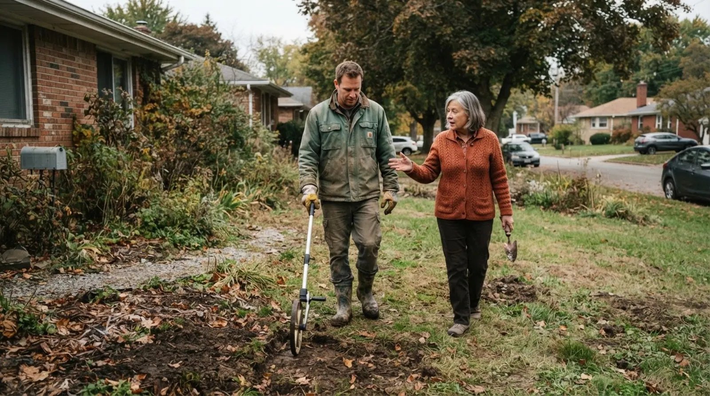
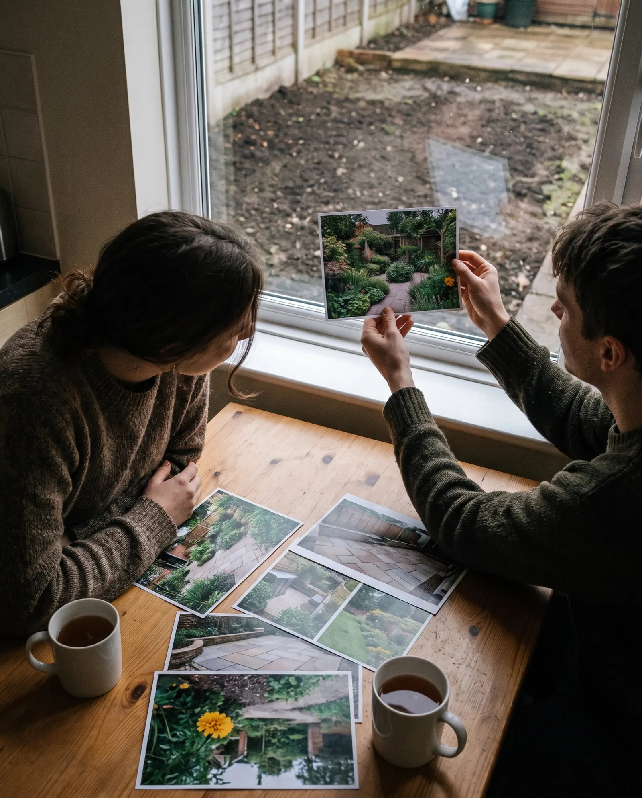
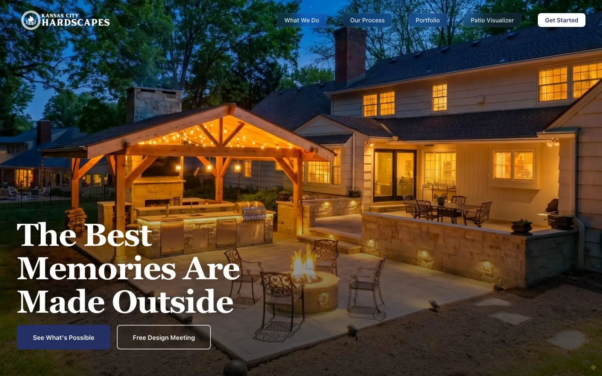
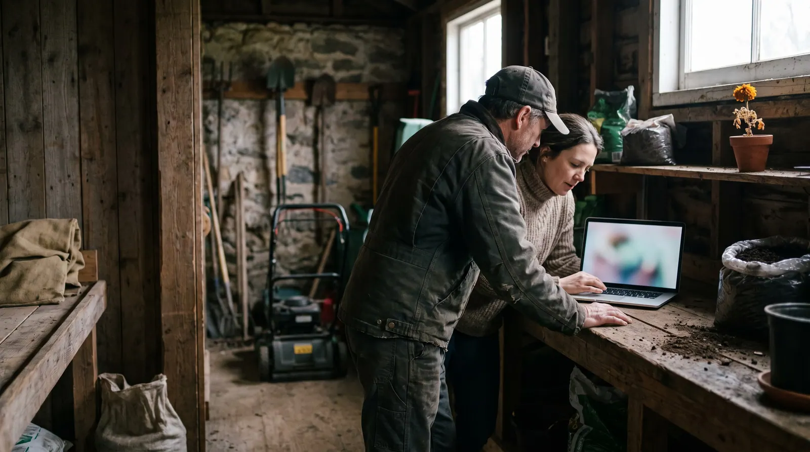

Roughly what will it cost?
We read the websites of 189 independent landscaping, lawn, hardscape and pool companies in the US the way a homeowner reads them on a phone, for answers to eight questions: who can do the job, whether they work in the area, and roughly what it costs among them.
0 websites
Four kinds of business
Twelve checks
The State of Independent Landscaping Websites · Q4 2026 · edition 2026-Q4
0%
The headline
of the websites in this study answer the homeowner's question.
Homeowners ask eight questions. The median site answers three.
Across 189 independent landscaping websites, the median site answers five of the eight homeowner questions this edition tests. 15% show any price; 86% show a gallery of their own work.1
What a homeowner can find out before asking for a quote
We turned eight questions a homeowner asks before inviting a landscaper to quote into eight checks, then read each site for an answer a visitor could find on a phone.
Share of all websites answering each question · green = a third or more · marigold = fewer than a third · centre line = half
Figure 1. Share of sites that answer each question on the home page or a page it links to, read from the served HTML. Sorted from least to most answered.


Most outdoor jobs have a season. How many sites offer a plan for the season?
Below is the usual year for six common jobs: a general guide to the trade, not a finding of this study. The finding is the line above, the share of sites that name a seasonal plan or maintenance package.
| Job | Jan | Feb | Mar | Apr | May | Jun | Jul | Aug | Sep | Oct | Nov | Dec |
|---|---|---|---|---|---|---|---|---|---|---|---|---|
| Patio & hardscape | book | book | work | work | work | book | book | |||||
| Spring cleanup | book | work | work | |||||||||
| New planting beds | book | book | book | work | work | book | work | work | ||||
| Weekly mowing plan | book | book | work | work | work | work | work | work | work | |||
| Pool opening | book | book | work | work | ||||||||
| Sprinkler winterisation | book | work | work |
Four kinds of business, side by side
Landscape design and build (48): median score 81, a price shown on 15%, a seasonal plan on 42%. Lawn care and maintenance (49): median score 79, a price shown on 10%, a seasonal plan on 71%. Hardscape and outdoor living (48): median score 80, a price shown on 10%, a seasonal plan on 29%. Pools and irrigation (44): median score 79, a price shown on 27%, a seasonal plan on 64%.
Where each website scores
Overall website score out of 100, one dot per site; the green rule is each group's median
Figure 2. Overall website score out of 100, one dot per site. The green rule marks each group's median.
Four businesses, up close
Four real sites from this edition, picked by how many checks they pass: the most, two from the middle and the fewest. The photographs are illustrations, not the businesses, which stay anonymous. The number is the overall website score; each dot is one check, filled when the site passes it.
Kansas City Hardscapes
Hardscape and outdoor living, Kansas City, MO. It answers 7 of the 8 homeowner questions this edition tests, loads fast on phones and describes its images; like most sites in this study, it has yet to pass text contrast (WCAG 1.4.3). Its overall website score is 83/100. Named as a positive example; every other site in this report is anonymous.

What it does well
- Services named: three or more as text
- Service area named: towns, ZIP codes or an area page
- Project gallery or portfolio of own work
- Free estimate or quote requested online
- Licensed and insured stated, or a licence or certification named
- Reviews marked up, in a widget or quoted
- A price shown: a visit, a package, a square foot or a project
- Real phone visitors see the main content in 1.4 s (Chrome UX Report, 75th percentile; good is 2.5 s or less)
- Every image has a text description (WCAG 1.1.1)
- Clikiti pillar scores of 90 or more: accessibility 97, SEO 95
Where it could still improve
- Not found on the home page or the pages it links to: seasonal plan or maintenance package offered
The homeowners left out
Homeowners who use a screen reader, a keyboard or an older phone on a weak signal are customers too. These checks measure whether the site lets them in.3
Table 1. Technical checks, share of the 189 sites that fail each one.
How the sites were read
Read
The home page and up to nine pages it links to (services, service area, gallery, prices, maintenance plans, about, reviews, estimate, contact), read as a server delivers them. The homeowner questions are answered here, by fixed published rules (Appendix A4).
Measure
Google Lighthouse (PageSpeed Insights) in a phone and a desktop render, with Chrome UX Report field data where it exists: load time, contrast and image descriptions. Repeatable.
Review
An expert usability review of each home page against Nielsen's heuristics, used only in the usability part of the score. Every issue must name the heuristic, a severity and the element, or it is dropped.
Read the full methodology Sample, definitions, scoring, precision and limitations, in Appendix A.

For agencies and freelancers
What this means for agencies
what to fix first, and how to pitch it
For small agencies and freelancers who sell websites to independent landscaping, lawn care, hardscape and pool companies. We scanned 189 of their websites: 1% score under 60 out of 100, and 74% leave at least three of the questions homeowners ask unanswered. Here is where the winnable work is, which problems to lead a pitch with, and how to show them without days of spec design.
Who is realistic to win
Lawn care and maintenance are the most winnable: the lowest median score in this report (79 out of 100), and 0% of them score under 60. Their problems are visible, specific and fixable by a small team.
| Type | Sites | Median | Under 60 |
|---|---|---|---|
| Landscape design and build | 48 | 81 | 0% |
| Lawn care and maintenance | 49 | 79 | 0% |
| Hardscape and outdoor living | 48 | 80 | 0% |
| Pools and irrigation | 44 | 79 | 5% |
Score out of 100. "Under 60" is the share of sites that miss most of what a homeowner looks for.
5 problems to lead a pitch with
- 91%Loads in under 2.5 s on a phone Build
Resize and compress the hero image and gallery photos, defer scripts, aim for under 2.5 s on a phone.
Your home page takes several seconds to appear on a homeowner's phone.
- 85%Roughly what will it cost? Content
Publish a starting price or a typical range for the common jobs: weekly mowing per visit, a cleanup, a patio per square foot, a pool opening.
"Roughly what will it cost?" is the first question a homeowner has, and your site makes them wait for a site visit to hear it.
- 83%Text contrast passes 4.5:1 Quick fix
Raise text contrast to at least 4.5:1 in the theme, especially text laid over garden photos.
Parts of the site are hard to read, and it is a WCAG failure.
- 71%Are you licensed and insured? Quick fix
State "licensed and insured" with the licence or registration number in the footer, and name certifications (ICPI, Landscape Industry Certified, pesticide applicator).
A homeowner letting a crew dig up the yard wants to know you are insured, and your site never says.
- 56%Do my neighbours vouch for you? Quick fix
Show recent reviews on the home page through a review widget or Review structured data, with the source named.
Your neighbours vouch for you on Google, but nobody sees it on your own site.
Share of sites with the problem. WCAG items are accessibility failures. Every check cites a standard in the method section.
How to show a prospect their problems, and a redesign
- 1Lead with their problem, not your services
Open with one question the site fails, for example loads in under 2.5 s on a phone (91% of sites in this report miss it), and show the exact page where the answer should be.
- 2Put a number on it
Compare their site with the sector: across 189 independent landscaping, lawn care, hardscape and pool companies sites, the median scores 79 out of 100 and answers 5 of the 8 questions homeowners ask. A number travels further inside the client than an opinion.
- 3Show the fix without days of spec work
A rough redesign that answers those questions persuades better than a proposal, but it usually costs a designer a day or two per prospect. You can sketch it by hand, or use Clikiti: the scan is free and shows any site's problems in about a minute, and paid plans draft a redesign of the home page from the prospect's own brand, from about $2.33 per pitch.
Scan a prospect's site free No sign-up. You see what the prospect would see.
Show every landscaper what homeowners see
Clikiti reads a landscaper's site the way a homeowner does, states what it found, and generates the redesign you present before the first call.
See your market on ClikitiMethodology
How this study was designed, who was included, what was measured and how far the results can be relied on. It is written so that an agency can share it with a landscaper who wants to check the evidence behind a pitch.
A1. The research question
When a homeowner wants a new garden, a patio, a pool or someone to look after the lawn, and looks up an independent company online, usually on a phone, can they find out what it does, whether it works in their area, what its work looks like, roughly what it costs, whether they can ask for a quote without calling, whether it is licensed and insured, whether it can look after the yard every season and whether neighbours vouch for it?
Population. Independently owned US landscaping and outdoor-living companies with one to three locations and their own website, in four groups: landscape design and build, lawn care and maintenance, hardscape and outdoor living, and pools and irrigation. These are the outdoor businesses a small or mid-size web agency can realistically win as clients.
A2. Who was studied
The sample was built from local search listings, city by city, then screened so that every site in it is one an independent agency could realistically win.
| Source | What it contributes | Sites |
|---|---|---|
| Local search, landscape design and build | Independent residential landscape design, installation and design-build firms found in local search results, city by city | 56 |
| Local search, lawn care and maintenance | Independent lawn care, mowing, fertilisation and grounds maintenance companies found in local search results, city by city | 56 |
| Local search, hardscape and outdoor living | Independent patio, paver, retaining wall, stonework and outdoor kitchen contractors found in local search results, city by city | 47 |
| Local search, pools and irrigation | Independent pool builders, pool service companies and sprinkler and irrigation contractors found in local search results, city by city | 45 |
Included
- An independently owned business with one to three locations, all in one state, and its own website (not a directory, marketplace or social profile)
- Serves homeowners: residential work is a main line of business, not a side to commercial, HOA or municipal contracting
- Based in the United States
- Home page responds and shows the business it claims to be (each home page title was checked before scanning)
Excluded
- Franchises and national brands (for example Weed Man, TruGreen, Lawn Doctor, The Grounds Guys, US Lawns, NaturaLawn, Spring-Green, BrightView, Yellowstone Landscape, Davey Tree, Bartlett Tree Experts, Blue Haven Pools, Premier Pools & Spas, Conserva Irrigation) and any business with four or more locations or offices in more than one state
- Contractors whose work is mostly commercial, HOA, institutional or municipal
- Garden centres and nurseries whose site is a store catalogue, even when they also install
- Directories, marketplaces and lead-generation pages (Angi, HomeAdvisor, Thumbtack, Houzz, Yelp, Porch, LawnStarter, Lawn Love) and generic keyword domains that hide the business
- Parked, placeholder, under-maintenance, password-protected or unreachable sites, hijacked domains and duplicates
| From list to sample | Sites |
|---|
| Region (US Census) | Landscape design and build | Lawn care and maintenance | Hardscape and outdoor living | Pools and irrigation | All |
|---|---|---|---|---|---|
| Northeast | 12 | 11 | 12 | 11 | 46 |
| Midwest | 11 | 14 | 14 | 12 | 51 |
| South | 12 | 13 | 12 | 12 | 49 |
| West | 13 | 11 | 10 | 9 | 43 |
| All regions | 48 | 49 | 48 | 44 | 189 |
A3. How the sites were read
Pages. The home page, then for each of nine topics (services, service area, gallery or portfolio, prices, maintenance plans, about, reviews, estimate or quote, contact) the best-matching link on the home page.
Speed and accessibility. Google PageSpeed Insights (Lighthouse) on a mid-range phone profile and on desktop, plus Chrome UX Report data from real visitors over the previous 28 days where Google publishes it for the site.
Crawler conduct. One request at a time to each site, at least 400 ms apart, at most ten pages per site; robots.txt is read and obeyed for every page requested; a site that refuses is left out and never retried. The crawler identifies itself as Mozilla/5.0 (compatible; ClikitiResearch/1.0; +https://clikiti.com).
A4. What was measured
8 questions homeowners ask before they ask for a quote, answered from what each site publishes, and 4 technical checks against published standards. A check passes only when the rule below is met; anything the crawler cannot confirm counts as not answered.
| Question | Counts as answered when | Standard |
|---|---|---|
| Do you do what I need?Services named: three or more as text | Clikiti homeowner question 1 of 8 | |
| Do you work in my neighbourhood?Service area named: towns, ZIP codes or an area page | Clikiti homeowner question 2 of 8 | |
| Can I see work you have done?Project gallery or portfolio of own work | Clikiti homeowner question 3 of 8 | |
| Can I get a quote without calling?Free estimate or quote requested online | Clikiti homeowner question 4 of 8 | |
| Are you licensed and insured?Licensed and insured stated, or a licence or certification named | Clikiti homeowner question 5 of 8 | |
| Do my neighbours vouch for you?Reviews marked up, in a widget or quoted | Clikiti homeowner question 6 of 8 | |
| Can you look after it every season?Seasonal plan or maintenance package offered | Clikiti homeowner question 7 of 8 | |
| Roughly what will it cost?A price shown: a visit, a package, a square foot or a project | Clikiti homeowner question 8 of 8 | |
| Technical checks | ||
| Loads in under 2.5 s on a phoneLoads in under 2.5 s on a phone | Core Web Vitals · LCP | |
| Text contrast passes 4.5:1Text contrast passes 4.5:1 | WCAG 1.4.3 | |
| Images have text descriptionsImages have text descriptions | WCAG 1.1.1 | |
| Local business structured dataLocal business structured data | Schema.org · LocalBusiness | |
A5. The website score
Each site's overall score (0 to 100) is Clikiti's website score, rubric 2.0.0. It measures the website, not the business, and the homeowner questions above do not feed it. It is a weighted mean of five pillars:
| Pillar | Weight | Based on |
|---|---|---|
| Usability | 30% | Checks of the home page for broken links and images, and an expert review of the page as rendered on a phone and on a desktop screen, against Jakob Nielsen's ten usability heuristics. Each issue must name the heuristic, a severity on the Nielsen Norman Group scale and the exact element or wording; issues without all three are discarded, and two independent passes must agree. |
| Speed | 25% | Google Lighthouse on a mid-range phone (60%) and on desktop (20%), and real-visitor Core Web Vitals from the Chrome UX Report (20%) where available. |
| Accessibility | 25% | Google Lighthouse accessibility audits (70%) and Clikiti's own WCAG checks of the served page (30%). |
| Search | 10% | Google Lighthouse SEO audits (60%) and Clikiti's own search checks of the served page (40%). |
| Trust | 10% | Google Lighthouse best-practice audits (40%) and security header checks (60%). |
Within a pillar, each issue costs points by severity (critical, high, medium, low) and by how many times it occurs; issues based on judgement count at 70% of measured ones, and duplicates of the same root cause count once. On the four business profiles, the number out of 100 is this overall score, and each dot is one check in its group: filled when the site passes it, hollow when it does not.
A6. Precision
With 189 sites, a share reported for the whole sample is precise to within ±7.1 percentage points at 95% confidence (worst case, a 50% share; 1.96 × √(0.25/n)). By type: landscape design and build ±14.1 (n = 48); lawn care and maintenance ±14 (n = 49); hardscape and outdoor living ±14.1 (n = 48); pools and irrigation ±14.8 (n = 44). Differences between types smaller than these margins should be read as similar. Percentages are rounded to whole numbers; medians are the middle value of the sites in a group.
A7. Quality control
- Every home page in the cohort was fetched and its title checked against the listed business before scanning, and every home page was checked for gambling, pharmacy, adult and crypto spam
- Businesses were checked for duplicates across domains by phone number
- Detection rules were checked against the evidence they record for a sample of passes and fails for every rule, and revised before the final run
- Every published figure is recomputed from the data at build time, and a statement in the text that the data does not support stops the build
- Results are published only after automated checks for missing data, anonymity, accessibility of the report itself and the margin of error statement pass
A8. Limitations
- A point-in-time snapshot: sites change, and a site may have improved or declined since it was read. Landscaping is seasonal, and the scan ran in October, when some companies promote fall cleanups, snow removal or winterisation rather than spring work.
- Only public pages were read: the home page and pages it links to. Chat widgets, multi-step quote forms, design tools and customer portals were not tested.
- Answers are read from the page as a server delivers it. Content that only appears after scripts run in the browser (some whole sites, galleries and review widgets) is not seen, which the study counts as a gap a search engine or a slow phone would also meet.
- The study reports what a website shows. It does not judge any company's design, planting, workmanship or prices, and it does not check whether any licence, certification or insurance is valid or current.
- Automated accessibility tests find only part of what WCAG covers; keyboard and screen-reader use need a manual audit.
- The sample is a structured list of real, independent businesses, not a random draw. Margins of error are given as a guide to precision, not as a guarantee that the results hold for every business in the country.
A9. Data, licence and corrections
The aggregate results are published as CSV and JSON beside this report under the Creative Commons Attribution 4.0 licence: you may reuse, adapt and share them, including in client proposals, with a credit to Clikiti and a link. No per-site results are published. Corrections and removal requests are reviewed and answered personally; see the end of this report.
Businesses in this study
The 189 websites in this edition, by type. This list says who was scanned and nothing more: results in this report are shown only in aggregate or anonymously.
Landscape design and build (48)
- Aspen Garden & LandscapeMadison, WI
- Austin Outdoor DesignAustin, TX
- Beautiful Blooms LandscapingJacksonville, FL
- Best of Texas LandscapesAustin, TX
- Birch Hill Landscape and DesignNewington, CT
- Bradley Landscape DevelopmentEncinitas, CA
- Calvin LandscapeIndianapolis, IN
- Creative ContourAvon, CT
- di Stefano LandscapingEssex, VT
- Dream Gardens Inc.Knoxville, TN
- Earthadelic Landscape & ConstructionKnoxville, TN
- Eisler LandscapesProspect, PA
- Eschenfelder LandscapingSalt Lake City, UT
- Fredell EnterprisesColorado Springs, CO
- Gail Willey LandscapingWashoe Valley, NV
- GardenaliaPittsburgh, PA
- Gardens of the CarolinasRaleigh, NC
- GrassRoots Landscape CompanyEugene, OR
- Ground OneMinneapolis, MN
- Haase LandscapeSpokane Valley, WA
- Habitat GardensPortland, OR
- John A. Anderson Landscape DesignSioux Falls, SD
- John Glenn LandscapesSavannah, GA
- Landscape Architecture LLCMadison, WI
- Little Lion Landscape DesignPortland, ME
- Natural Environments LandscapingFargo, ND
- New Dawn LandscapingPrinceton, NJ
- Outdoor ExpressionsBillings, MT
- Parker Garden DesignNashua, NH
- Peabody Landscape GroupColumbus, OH
- Pearl Landscaping & Patio CompanyAlbany, NY
- Philip Moser AssociatesBaton Rouge, LA
- Plant by DesignRichmond, VA
- Priority Landscape ConstructionOmaha, NE
- Rine Landscape GroupColumbus, OH
- Royal Creations Architectural LandscapingKansas City, MO
- Shalvey Brothers LandscapeWarwick, RI
- Sorce Signature OutdoorsTucson, AZ
- Southern LandscapeAustin, TX
- Specialty Landscape Inc.Fresno, CA
- Stuteville LandscapingSacramento, CA
- Summit Landscape ConstructionNashua, NH
- TerraVita Landscape Design, Contractors and GardeningBoise, ID
- The Easy GardenerKnoxville, TN
- Urban Earth LandscapingAlbuquerque, NM
- Verdant EnterprisesSavannah, GA
- Vive Exterior DesignFishers, IN
- Warren LandscapingShrewsbury, MA
Lawn care and maintenance (49)
- A Superior CutSalt Lake City, UT
- A+ Landscaping and MaintenanceManchester, NH
- Acre GroupPelham, AL
- Action Yard & Tree ServicesTucson, AZ
- Alamo Turf WorksSan Antonio, TX
- Audet EnterprisesWestbrook, ME
- Beautiful LawnsWaterford, NY
- Burd's Lawn CareWilliston, VT
- Central Jersey Landscaping & Lawn MaintenanceHamilton, NJ
- City & Estate GardenerProvidence, RI
- Cooper Lawn CareRancho Cordova, CA
- Dominion Lawn CareFresno, CA
- Eagle Lawn & LandscapeSioux Falls, SD
- Excel Lawns & LandscapeDes Moines, IA
- Fairway GreenRaleigh, NC
- Farison Lawn CareLouisville, KY
- Gold Quality Lawn Care ServicesGarner, NC
- Grasshopper GardensGansevoort, NY
- Green Lawn Care and Landscape Inc.Boise, ID
- Green Machine Lawn & LandscapeWichita, KS
- Greenbeard Lawn CareColumbus, OH
- Harrington's Organic Land CareBloomfield, CT
- Healthy Lawns & ShrubsLittle Rock, AR
- Kozy Lawn CareOmaha, NE
- LawnmaxReno, NV
- Lawns of TulsaBroken Arrow, OK
- LawnScapes of BillingsBillings, MT
- Local Roots Outdoor ServicesBluffton, SC
- Look At That Lawn CareJacksonville, FL
- Madison Grassman Lawn CareMadison, WI
- Martinez Yard WorksEast Hartford, CT
- Martz Bros. Lawn Care & Tree DoctorKansas City, MO
- Mass Landscaping & Snow RemovalWorcester, MA
- Mastergreen LawncareColumbus, OH
- Nebraska Yard CareOmaha, NE
- NutriGreen Lawn CareKeller, TX
- OregonScapesEugene, OR
- Precision Cut Lawn ServiceIndianapolis, IN
- Pristine Lawn & LandscapePittsburgh, PA
- Quality All-Care Lawn ServicesBonner Springs, KS
- Quality Lawn CareAlbuquerque, NM
- Spokane ProCare IncSpokane, WA
- St. John Lawn CareKnoxville, TN
- Top of the Line 904 Lawn CareJacksonville, FL
- True Lawn Care Inc.Lakeside, CA
- Viens LawncareBloomington, MN
- Wake Pro Lawn CareRaleigh, NC
- Welk's Lawn CareWest Fargo, ND
- Wood Lawn Care IncIndianapolis, IN
Hardscape and outdoor living (48)
- 4 Corners HardscapesMadison, WI
- Allscape OutdoorJacksonville, FL
- American MasonryEast Providence, RI
- Artisan HardscapesFargo, ND
- Beyond Brick TucsonTucson, AZ
- Brilliant Borders LandscapingWaukee, IA
- Cedar Creek LandscapesPennington, NJ
- Columbus HardscapesColumbus, OH
- Crescent Moon LandscapingCharleston, SC
- Cutting Edge HardscapesIndianapolis, IN
- Donas Outdoor LivingMcMurray, PA
- Endless Summer HardscapesSan Diego, CA
- Excellence Hardscapes & Outdoor LivingKansas City, MO
- FireBrick Masonry & ExcavationBurlington, VT
- Floriscapes Inc.Jacksonville, FL
- Frickle's Lawn & LandscapeBillings, MT
- G & R ContractingHenrico, VA
- Garcia's LandscapingManchester, NH
- GardenGOATAustin, TX
- Heirloom LandscapesSturbridge, MA
- HV Hardscape LLCColorado Springs, CO
- Interlock HardscapeSpokane, WA
- Interlocking Design LLCEugene, OR
- Kansas City HardscapesKansas City, MO
- KG Stone & HardscapeDerry, NH
- Kittleson LandscapeMadison, WI
- Kodiak LandscapeCottonwood Heights, UT
- KRD LandscapingCharlton, MA
- Landworks NWPortland, OR
- Larkin Landscape and DesignWest Des Moines, IA
- Level Up HardscapesOmaha, NE
- Louisville HardscapesLouisville, KY
- Lucas Outdoor DesignKnoxville, TN
- Mike's EvergreenClovis, CA
- Omaha Backyard LivingOmaha, NE
- PaverCraftersClearwater, FL
- Reliable HardscapesTampa, FL
- RPM Outdoor LivingAlbany, NY
- Scenic GreenIndianapolis, IN
- St. Pierre Stone & GardenWestbrook, ME
- Stone & ScappesWethersfield, CT
- SuperiorScapeBirmingham, AL
- Tierra DesignSioux Falls, SD
- TwinscapesColumbus, OH
- Ultimate PaversTampa, FL
- Unlimited LandscapesLouisville, KY
- Waldron Outdoor DesignsBallston Spa, NY
- Yard Exotics And Contractors LLCAlbuquerque, NM
Pools and irrigation (44)
- Apex Pool & TennesseeKnoxville, TN
- Aqua Lawn and LandscapeFargo, ND
- Aquatic CreationsColumbus, OH
- B & J PoolsBirmingham, AL
- Brothers Irrigation & LightingColumbus, OH
- Clear Blue PoolsSummerville, SC
- Cypress Pools & SpasLatham, NY
- Douglas AquaticsRichmond, VA
- Ed's Pools Inc.Knoxville, TN
- Edwards Pool ConstructionWichita, KS
- EMCO Sprinkler CompanyPittsburgh, PA
- Eugene Sprinkler Service, LLCEugene, OR
- Gold Star IrrigationJacksonville, FL
- Irrigation by DesignMinneapolis, MN
- JAL PoolsBluffdale, UT
- JC PoolsSouth Barre, MA
- JDO Pools & SpasRichmond, VA
- Jim Chandler PoolsPenryn, CA
- Jose's PoolsSan Antonio, TX
- Landscape SprinklerSioux Falls, SD
- Larsen's Pool & SpaTampa, FL
- Ledgewater PoolsFalmouth, ME
- Meraki Pools AZTucson, AZ
- Mid-City Custom PoolsGrapevine, TX
- Mowry Brothers Pool CompanyBuxton, ME
- New England Lawn IrrigationLondonderry, NH
- Oasis Sprinkler SystemsBillings, MT
- Olympic Pool & SpaOmaha, NE
- Peloquin Sprinklers & LandscapingColorado Springs, CO
- Perma PoolsIndianapolis, IN
- Pools by RichardCranston, RI
- Poolscapes VermontColchester, VT
- Prestige PoolsSt. Paul, MN
- Rain King IowaWest Des Moines, IA
- Rizzo PoolsWest Hartford, CT
- SA RainmakerSan Antonio, TX
- Sierra SprinklerReno, NV
- Signature Pools & SpaClovis, CA
- Speck USAWest Des Moines, IA
- Spot PoolsRaleigh, NC
- Storm IrrigationOmaha, NE
- Superior Sprinkler Systems IncBoise, ID
- Swim-Mor Pools and SpasEnglishtown, NJ
- Tri-City PoolsRavena, NY
About this study
This report is based on automated scans of publicly available home pages, and pages they link to, run on 2026-10-14 to 2026-10-15. Its findings are a point-in-time technical snapshot of each website. They are not a judgement of anyone's design, planting, workmanship or prices, and automated checks may contain errors. This report is not a judgement of the quality of any landscape, installation or price, and it does not check whether any licence, certification or insurance is valid or current. Clikiti is not affiliated with, and does not endorse, any business listed here; trademarks belong to their owners. The report is provided “as is” under CC BY 4.0, without warranty of any kind. Every person in this report's photographs is AI-generated; none is a real person. The one business screenshot is the featured business's own home page, shown unaltered.
Remove my business from this study
We review every request and reply when it's done; removed businesses are excluded from future editions.